One continuous escape route
Enter from the south, restore west-room power and release the east security control. Start Gate A's motor and perimeter lamps, cross north, close the gate from the far side, then continue in the same world through the loading lanes and Gate B to the coast.
The new room and freight details are decorative. They add no loot or interactions. Existing environment assets and the established map, mission, combat, lighting and gate pipelines remain in use.
Tiled composition: outdoor court and open-roof rooms

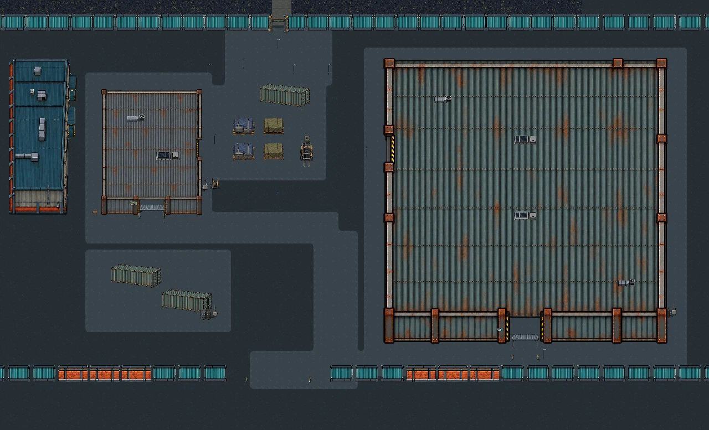

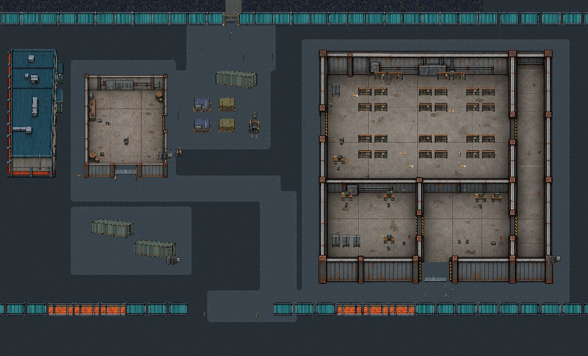

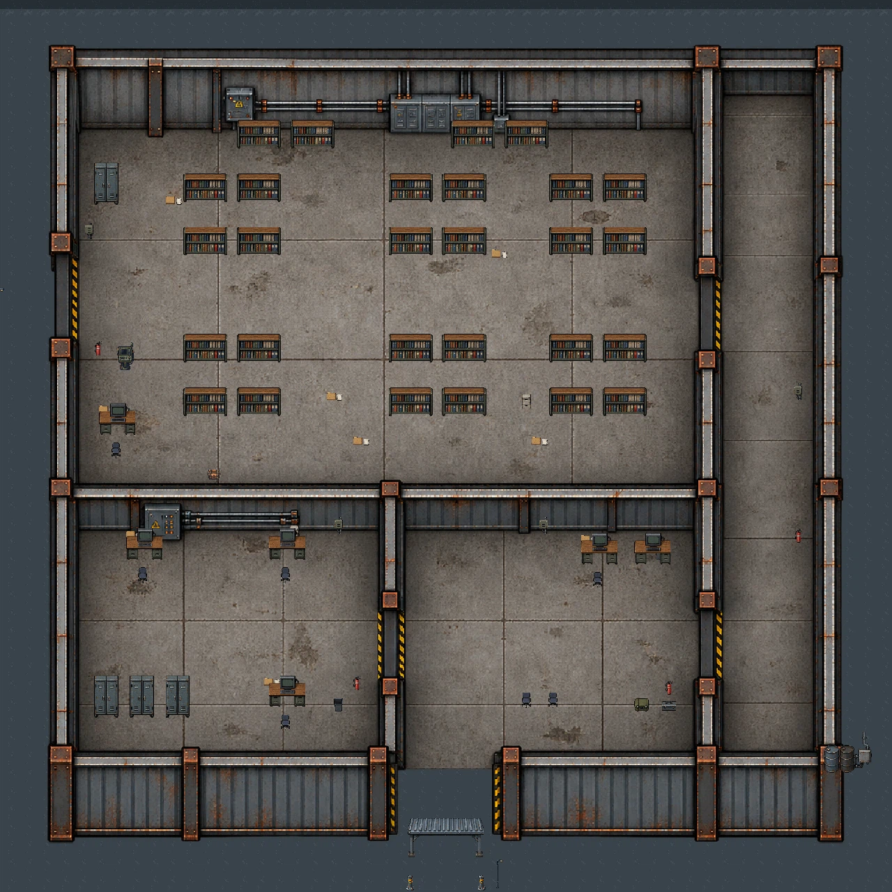
Room scale and sampled clear floor
The security building uses a 1536 × 1536 px registered canvas. Floor rectangles are sampled against the map's static collision rectangles with an 8 px grid and an 8 px player-radius clearance test.
| Room | Approx. floor bounds | Usable sampled area | Share |
|---|---|---|---|
| Archive hall | 1124 × 627 px | 576,448 px² | 81.79% |
| East service corridor | 188 × 1214 px | 214,016 px² | 93.77% |
| Southwest control office | 556 × 427 px | 200,000 px² | 84.24% |
| South lobby | 570 × 427 px | 219,904 px² | 90.35% |
The sample finds one 4-connected region per room. These are bounded map geometry estimates, not runtime crowd traversal or human navigation results. See the metrics JSON for all bounds, doorway gaps and sampling limits.
20 separate decorative sprites
Twelve interior details, four exterior details and four freight props supplement retained industrial walls, workshop/security art, gate sprites and environment assets. They are not loot, and their art does not create collision; solid footprints are authored separately.
Interior details · 12
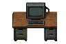
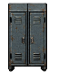
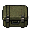
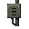
Exterior details · 4
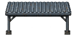
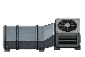
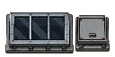
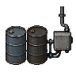
Freight props · 4
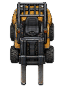
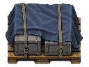
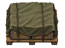
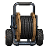
Normal-app pressure evidence
This selected direct route smoke used the normal application and authored encounter pressure. It passed at tick 16,557: peak alive 128, 668 shots, 177 deaths, 0 blasts, player HP 100. Event counts describe the population, not what is visible on screen.

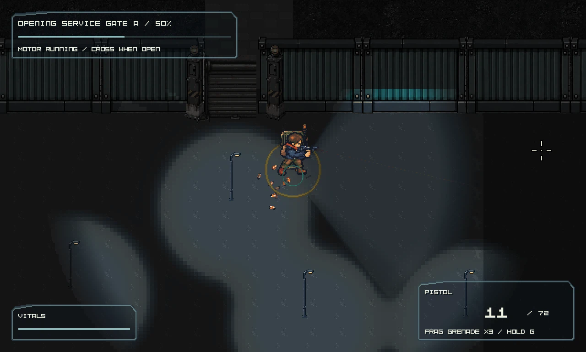

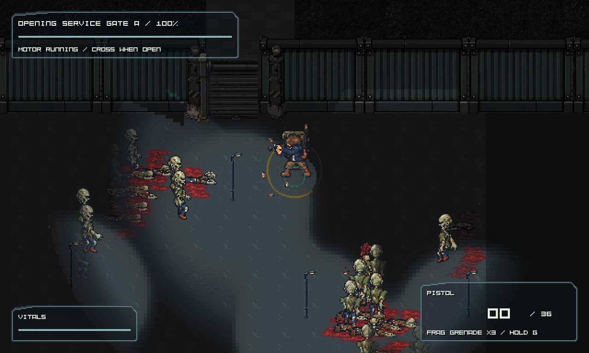
These captures are from the direct normal-app smoke, not the isolated native probe. The separate candidate probe disables waves and cannot establish encounter pressure.
Isolated native route probe · matching candidate
The probe verifies authored room/gate navigation, lights and gate state with waves disabled. The candidate-matched probe passed. Four representative images match the previously inspected source captures byte for byte. This proves neither pressure nor human quality.

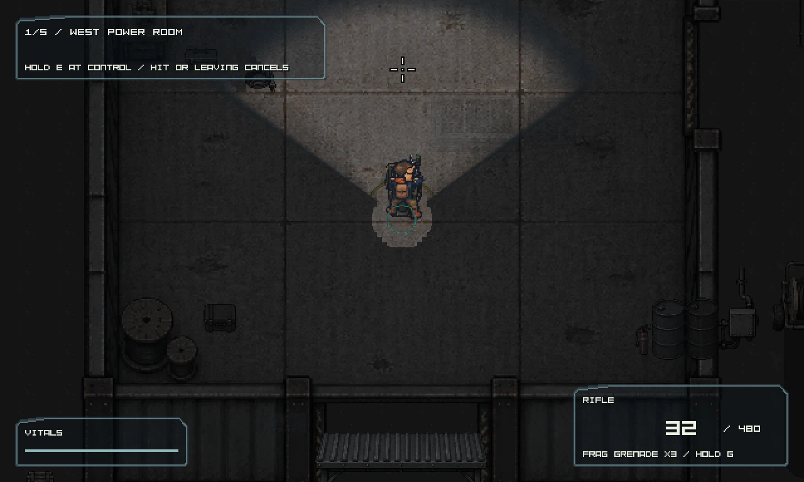

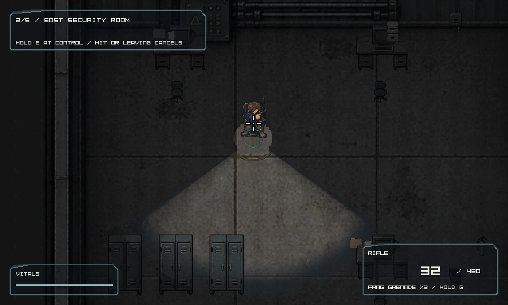

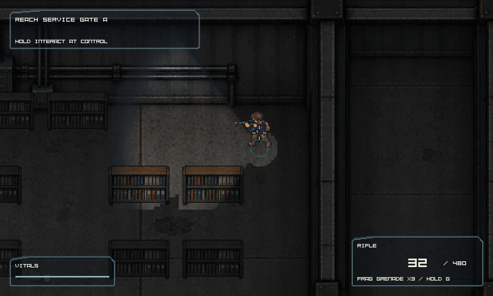

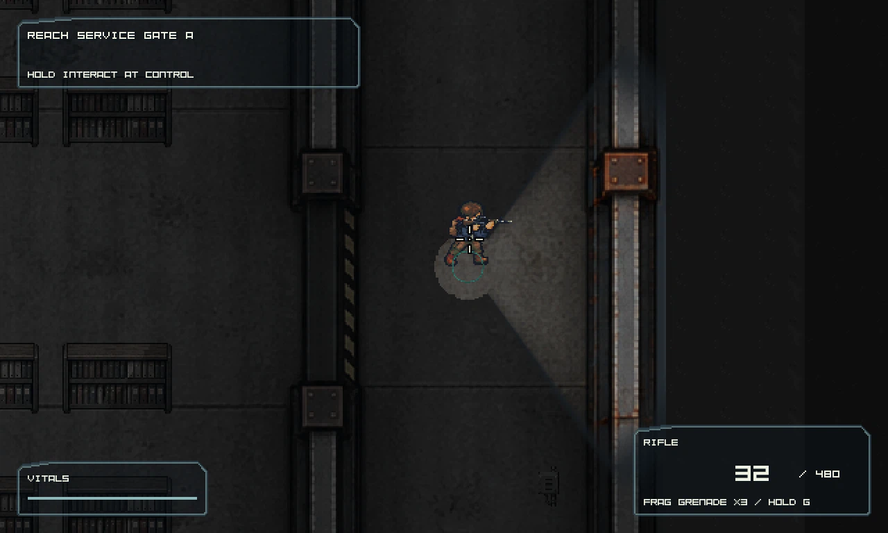

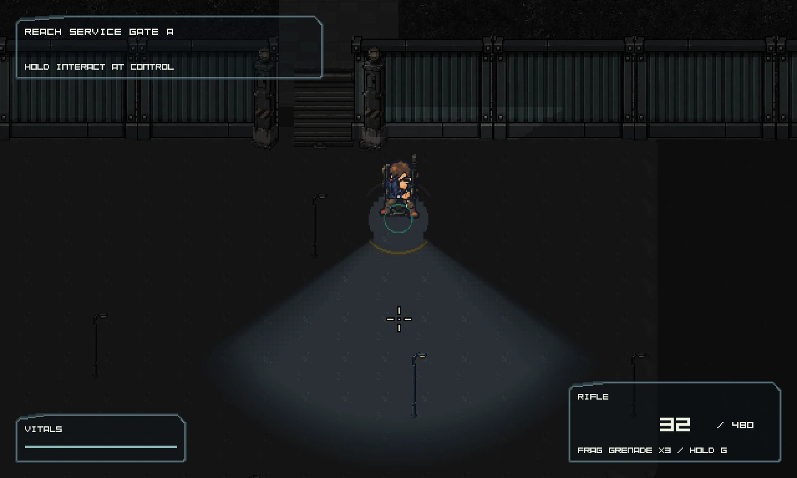

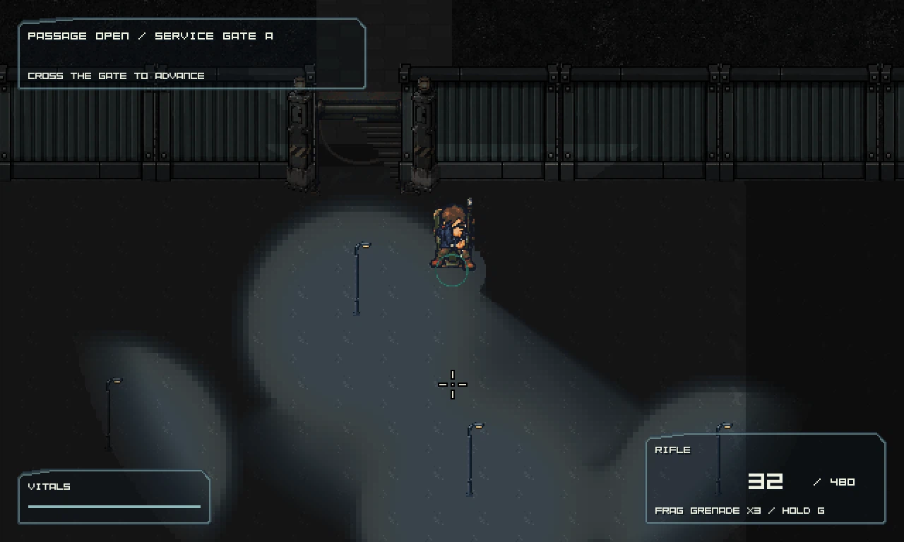

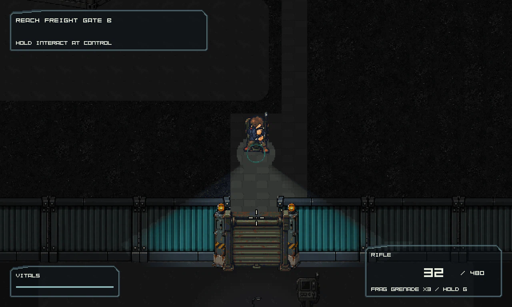
Open visual and playtest findings
- Archive shelving still repeats in regular rows; the corridor remains sparse.
- The office interaction is not yet a strong landmark in the dark native view.
- Human navigation, combat space, pressure timing and perceived fairness remain unreviewed.
No full concept or product-art acceptance is claimed. The new sprites and successful technical checks do not close these findings.
Read the independent visual review or open the coordinated eight-role design plan. Its selected map corrections are proposals for the next implementation pass.
Reports and source
Stable project checks Matching input, bundle and executable checks Direct normal-app smoke Service route smoke Space metrics Candidate probe receipt Candidate probe trace Tiled review and renders Source Tiled project Source map Map and route notes Encounter source Interior design contract Review 005 Review 006 Final scoped candidate review
Normal-app sampled frame rates vary by phase: 13.6 FPS during power restoration,
38.1 FPS during Gate A opening and 54.8 FPS during Gate B opening. This route sample is not
a performance acceptance benchmark. The later service route measured 60.6 FPS in the power
phase without a performance code change; controlled cold/steady sampling is still needed.
Bundle file copying succeeded; the aggregate historical
catalog refresh failed on display_name. The standalone exporter succeeded with
-SkipCatalog. Package identity checks pass with no mismatched files.
Service route result: 18,046 ticks, peak 113 alive, 669 shots, 190 deaths and 100 HP. Both runs are scripted application checks, not human playtests.